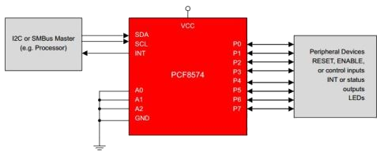
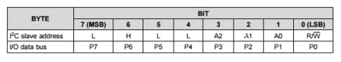

Sommaire
- LE MATERIEL
- Le circuit intégré PCF8574 : remote 8-bit I/O expander for I²C-bus
- Exemple d'utilisation du circuit PCF8574 : l'IHM SSI
- Les cartes Netduino
- Les cartes FEZ
- LE LOGICIEL
- LES FASCICULES
- La page du projet MicroToolsKit
1. LE MATERIEL
1.1 Le circuit intégré PCF8574 : remote 8-bit I/O expander for I 2C-bus
- Présentation
- Schéma interne du composant
- Adressage
- Documentation: pdf
- Distributeur: Farnell
Le PCF8574 est un circuit intégré permettant de contrôler huit entrées / sorties numériques par l'intermédiaire d'un bus I²C. Il peut être utiliser pour interfacer des Led ou des boutons-poussoir comme dans l'exemple d'interface homme machine présentée ci-dessous.


1.2 Exemple d'utilisation du circuit PCF8574 : l'IHM SSI
Deux PCF8574 servent d'interface à l'Interface Homme Machine SSI qui se compose :
- d'un afficheur I²C 2x16 (MIDAS ou BATRON) à circuit PCF2119,
- de huit leds et de huit boutons-poussoir connectés à deux PCF8574.

1.3 Les cartes Netduino
Secret Labs
- Microcontrôleur : STM32F405RG 32 bits à architecture Cortex-M4 cadencé à 168 MHz.
- RAM : 164KB+.
- Flash : 1408KB.
- Port Ethernet : 10/100Mbps (Wifi:802.11b/g/n)*.
- E/S numériques : 22
- Entrées analogiques : 6
- Stockage: carte µSD
- IDE : Microsoft Visual Studio
- Framework : .NETMF 4.3
- Langages de programmation : C#, VB
- Compatibilité : shield Arduino, Gadgeteer
 |
 |
| Netduino 3 Ethernet | Netduino 3 wifi* |
- Sites à consulter : Netduino, NETMF
- Distributeurs : Mouser Electronics
1.4 Les cartes FEZ
GHI Electonics (Extrait)
- Microcontrôleur : 180 MHz 32-bit ARM Cortex-M4.(120 MHz 32-bit ARM Cortex-M3 )*
- SoC(SoM)* : G80 G120*
- RAM : 156 KB(2.87 MB)*.
- Flash : 256 KB (13.67 MB)*.
- E/S numériques : 53(60)*
- Entrées analogiques : 16(8)*
- Réseaux : Ethernet TCP/IP, WiFi, and SSL.
- Stockage: carte µSD
- IDE : Microsoft Visual Studio
- Framework : .NETMF 4.3
- Langages de programmation : C#, VB
 |
 |
| PANDA III | COBRA III* (compatible Gadgeteer) |
- Sites à consulter : GHI ELECTRONICS, NETMF
- Distributeurs : Mouser Electronics
2. LE LOGICIEL
2.1 Contenu du répertoire proposé au téléchargement
Le répertoire proposé au téléchargement (au format zip ou tar.gz) contient la solution PCF8574 composée :
- Du projet PCF8574 : le code source de la classe PCF8574.
- Du projet Netduino : un exemple d'utilisation de cette classe avec une carte Netduino.
- Du projet FezPanda : un exemple d'utilisation de cette classe avec une carte Fez Panda.
2.2 Le NuGet MicroToolsKit
La dernière version compilée de la classe PCF8574 se situe dans la bibliothèque MicroToolsKit disponible sur nuget.org.
Organisation des classes contenues dans MicroToolsKit [lien]
Note : Installer ce nuget dans le projet Visual Studio simplifie l'utilisation de la classe.
2.3 Les Wikis
Des wikis sont dédiés aux cartes Netduino et GHI Fez. Ils proposent au téléchargement :- Fascicules d'exemples de code pour les cartes Netduino. [lien]
- Fascicule d'exemples de code pour les cartes FEZ. [lien]
2.4 Description et utilisation de la classe PCF8574
- Rôle: Contrôler huit entrées / sorties numériques via un bus I²C.
- Assembly: MicroToolsKit (disponible sur nuget.org)
- Espace de noms: Microtoolskit.Hardware.IO
Création d'un projet avec l'IDE Visual Studio
- Créer un nouveau projet en suivant la démarche décrite dans le chapitre "Premier programme en C# étape par étape" du Wiki dédié à une carte Netduino ou du Wiki dédié à une carte GHI Fez. Ces Wikis sont accessibles ici.
- Utiliser le gestionnaire de paquets NuGet pour ajouter la bibliothèque MicroToolsKit ( nuget.org) dans le projet. (Dans l'explorateur de solution, clic droit sur les Références du projet puis choisir Gérer les packages NuGet.... Installer le paquet.)
- Ajouter l'espace de noms Microtoolskit.Hardware.IO dans l'en-tête du fichier source.
- Créer un objet en utilisant le constructeur PCF8574.
- Utiliser la méthode Write pour accéder au port en écriture et la méthode Read pour accéder au port en lecture.
Exemple
using System.Threading;
using Microtoolskit.Hardware.IO;
namespace test
{
public class Program
{
public static void Main()
{
byte state = 0xFE;
PCF8574 Leds = new PCF8574(); // SLA = 0x38, Frequency = 100kHz
Leds.Write(state);
while (true)
{
if (state != 0)
state = (byte)(state << 1);
else
state = 0xFF;
Leds.Write(state);
Thread.Sleep(500);
}
}
}
}
Constructeur
| Syntaxe | Description | |
 |
PCF8574(UInt16 SLA, Int16 Frequency) | Instancie un objet "PCF8574(A)". SLA : l'adresse sur 7 bits, est à définir dans l'intervalle [0x20,0x27] pour un PCF8574 et dans l'intervalle [0x38,0x3F] pour un PCF8574A. (0x38 par défaut) Frequency est à définir dans l'intervalle [100kHz,400kHz]. ( 100kHz par défaut) Exemple PCF8574 Leds = new PCF8574(); |
Propriétés
| Syntaxe | Description | |
 |
SLA | Retourne l'adresse attribuée au circuit par le constructeur. |
|
TransactionTimeOut | Fixe ou retourne le temps alloué à une transaction avant la génération d'une exception System.IO.IOException. (1000ms par défaut) |
Méthodes publiques
| Syntaxe | Description | |
|
byte Read() |
Renvoie un octet représentatif de la valeur présente sur le port du PCF8574(A). Note byte state = Leds.Read(); |
|
void Write(byte value) |
value: octet à écrire sur le port du PCF8574(A). Note byte state = 0xFE; Leds.Write(state); |